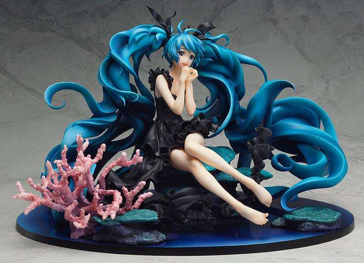

初音手办
指未涂装树脂模件套件，是收藏模型的一种，也是日本动漫周边中的一种，英文原文为Garage Kits（GK），是套装模件（Model Kits）的意思。特指未上色组装的模型套件，需要玩家自己动手打磨、拼装、上色等一系列复杂的工艺，而且难度远大于一般模型制作，主要材料为树脂。后来因为误解，手办也被用作指包括完成品所有树脂材质的人形作品，但其原义就是特指未涂装的模件。也有被用作指人形，即所有收藏性人物模型的泛称。手办一般分为好几种。
初音手办不要790，现在涨价1400
